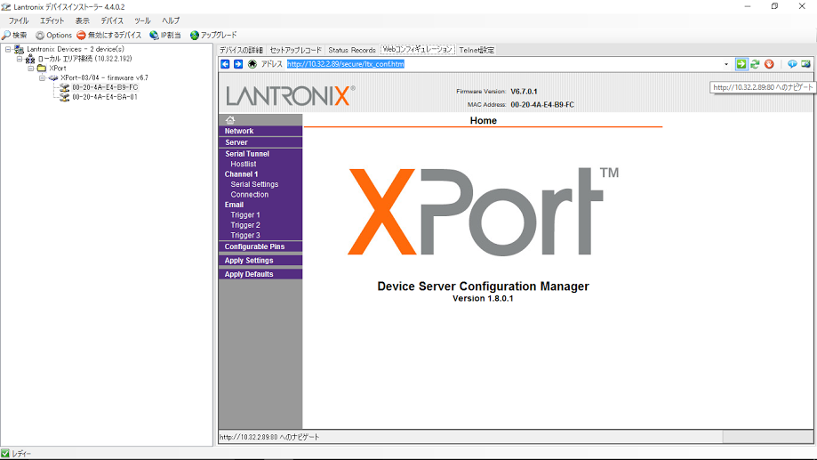
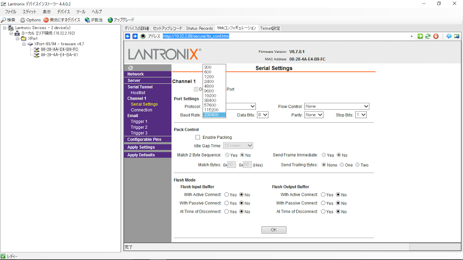

DAQ/GTO/GTOの準備
概要
新しくGTOモジュールを使う際に必要な手順について
手順
- LANポートの設定
- 新品を使うときはbaud rateの設定が必要
- LantronixのDevice InstallerをPCにインストールする。
- GTOをネットワークに接続し電源を入れる。
- PCをGTOと同じサブネットのネットワークに接続し、Device Installerを起動する。
- GTOのMACアドレスと一致するデバイスを選んで"Webコンフィギュレーション"タブを開く
 - →ボタンでページを開き、"Serial Settings"からBaud Rateを最大値にする。

- firmwareの書き込み
- ribfdaqのページから.mcsファイルをダウンロード(このメモではsdgto21.mcsとgscrgto10.mcs)
- MOCOの準備で示したFPGA書き込み手順に従ってでISE impactをPCにインストールする。
- GTOとPCをXilinxのFPGAライターで接続し、GTOの電源を入れる。
- MOCOと同様にISE impactで"initialize chain"ボタンを押す。
- MOCOと違いGTOでは2つチップが見つかるので一つ目のウィンドウでは"Bypass"を押し、2つ目でダウンロードした.mcsファイルを選択する。
- 左下のウィンドウから"Program FPGA"をクリック
- 青色の"succeeded"が表示されれば終了